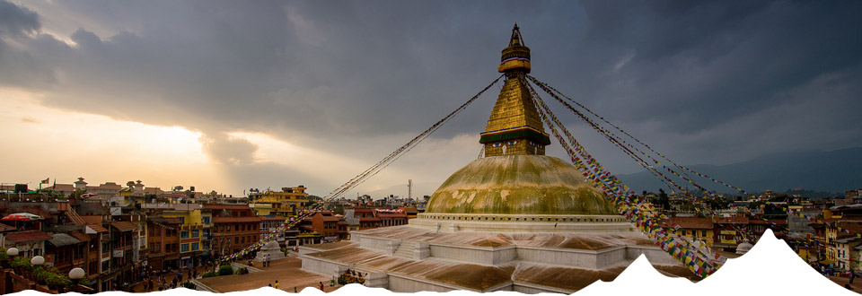
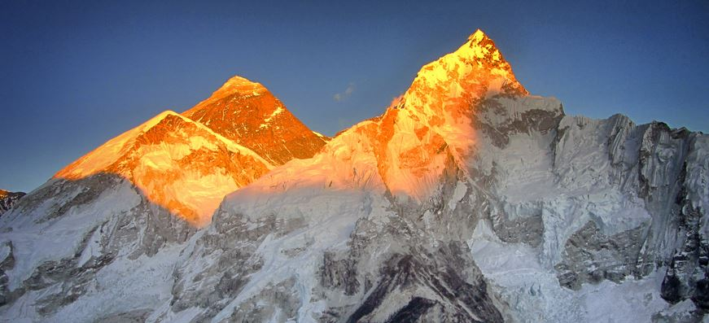

Nepal lies in Asia.It is bordered by China to the north and India to the south, east, and west. It is separated from Bangladesh by a narrow Indian corridor and from Bhutan by the Indian state of Sikkim. Nepal is located in the Himalayas and is home to eight of the world's ten tallest mountains, including Mount Everest, the highest point on Earth. Its southern Madhesh region is fertile and humid.[11] The country has an area of 147,181 square kilometres (56,827 sq mi), making it the world's 93rd largest country by area.[12] It is also the 41st most populous country.
Nepal is a country of unity in diversity
Nepal is a multiethnic nation and Nepali is the official language. The nation of unity in diversity is known as “The Himalayan Nation”, “Land of Mount Everest”, birth place of Lord Buddha, birth place of Sita, the “Land of Living Goddess-Kumari” is dignified by the heroism of its brave warrior ancestors-the “Gurkhas” and mainly divided as Himalayan, Hilly and Terai (Madhesh) regions on the basis of climate and land structures.Nepal is a country full of natural resources. It is known to one of the richest water resources in the world. North boarder of Nepal is surrounded by the great Himalaya by 800 kilometers. The Himalaya has in it eight highest mountains out of those fourteen over 8,000 meters. The highest among them is Mt. Everest, standing proudly in the Himalayan region of Nepal.The Himalaya gave birth to more than 6,000 rivers flowing from the Himalaya to the most fertile land in “Terai – Madhesh” of Nepal. Terai is the source of food grains to Nepali.Nepal is a paradise for birds providing habitat for hundreds of flying species.More than 60 ethnic groups live in Nepal and they have their own distinct culture and their own languages.Nepal is also known as land of temple. It is said, you can see as many temples as houses and as many Gods as people in Nepal.Pashupatinath, Muktinath and Janaki Temples and so many other holy shrines are pilgrimage destination to the Hindu all across the world.Boudhanath and Swayambhunath are the big stupa in the world for Buddhist to visit. Lumbini, the birthplace of Gautam Buddha, from where the world knew the meaning of peace is in Nepal.Nepal is no doubt the heaven to live and also the best destination to surf on for holiday pleasure. Either the Yogis smoking-naked in ashes at Pashupatinath temple or monks enchanting “ॐ माह्ने पद्मे हुँम।“ - ”Om Mahne Padme Hum” in Baudhnatha and Swayambhunath temples are smoothing and transcending enough to heal all the stress and provide pleasure of living.
The first civilizations in Nepal, which flourished around the 6th century B.C. , were confined to the fertile Kathmandu Valley where the present-day capital of the same name is located. It was in this region that Prince Siddhartha Gautama was born in 563 B.C. Gautama achieved enlightenment and spawned Buddhism.
The history of Nepal has been influenced by its position in the Himalayas and its two neighbors , modern day India and China. Due to the "arrival of disparate settler" groups from outside through the ages, it is now a multiethnic, multiracial, multi Culture, multi religious, and multilingual country.
Nepal experienced a struggle for democracy in the 20th century. During the 1990s and until 2008, the country was in civil strife. A peace treaty was signed in 2008 and elections were held in the same year. In a historical vote for the election of the constituent assembly, Nepalese parliament voted to oust the monarchy in June 2008. Nepal became a federal republic and was formally renamed the Federal Democratic Republic of Nepal.
Culture(संस्कृति)
Hindu and Buddhist traditions in Nepal go back more than two millennia. In Lumbini, Buddha was born, and Pashupatinath temple, Kathmandu, is an old and famous Shiva temple of Hindus. Nepal has several other temples and Buddhist monasteries, as well as places of worship of other religious groups.
Facts of Nepal

Population
Capital
Area
Language
Religion
Currency
Life Expectancy
GDP per capita
Literacy percent
25,371,000
Kathmandu; 741,000,
147,181 square kilometers
Nepali, English, many other languages and dialects
It rises from as low as 59 metres (194 ft) elevation in the tropical Terai on north to some 90 peaks over 7,000 metres (22,966 ft) including Earth's highest 8,848 metres (29,029 ft) Mount Everest or Sagarmatha on south within mere distance of 145 to 241 km.
Almost 118 ft rise per km of distance traversed from north to south.